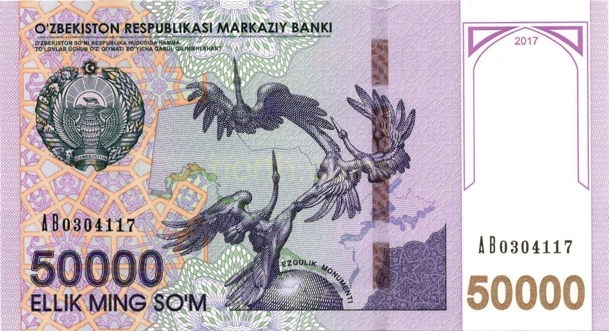

O‘zbekistonda YouTube monetizatsiyasi: Saida Mirziyoyeva Google bilan muhokama qildi
Prezident Administratsiyasi rahbari Nyu-Yorkda Google vitse-prezidenti Karan Bhatiya bilan monetizatsiyani ishga tushirishni muhokama qildi. CERR hisobiga ko‘ra, O‘zbekiston har yili $50 mln gacha yo‘qotmoqda.

Prezident Administratsiyasi rahbari Saida Mirziyoyeva 2026-yil 23-sentabr kuni Nyu-Yorkda Google kompaniyasi vitse-prezidenti Karan Bhatiya bilan uchrashdi. Uchrashuvda O‘zbekistonda YouTube monetizatsiyasini ishga tushirish masalasi muhokama qilindi. Muzokarada O‘zbekistonning AQShdagi maslahatchisi Komil Allamjonov ham ishtirok etdi.
Muammo nimada
O‘zbekiston hozircha YouTube Hamkorlik dasturi (YouTube Partner Program) ishlamaydigan davlatlar qatorida. Bu mahalliy ijodkorlar o‘z videolaridan reklama daromadi ololmasligini anglatadi. Monetizatsiya dunyoning 108 mamlakatida faol; Markaziy Osiyoda esa faqat Qozog‘istonda mavjud.
Yo‘qotilayotgan pul
Iqtisodiy tadqiqotlar va islohotlar markazi (CERR) 2025-yilgi tahliliga ko‘ra, monetizatsiya yo‘qligi sababli O‘zbekiston har yili 50 million dollargacha daromaddan mahrum bo‘lmoqda. Hisob-kitob quyidagicha: mamlakatda yiliga taxminan 36 milliard ko‘rish qayd etiladi, CPM (ming ko‘rsatish narxi) 0,8–1,4 dollar bo‘lganda umumiy daromad 28,8 milliondan 50,4 million dollargacha yetishi mumkin. Bu YaIMni 0,05–0,1 foizga oshirishi kutilmoqda.

Biz so‘nggi yillarda shaxsga doir ma’lumotlarni qayta ishlash va raqamli to‘lovlar sohasidagi qonunchilikni takomillashtirdik. Buning natijasida O‘zbekistonda xalqaro to‘lov tizimlaridan erkin foydalanish uchun keng yo‘l ochilmoqda. Kompaniya bilan juda ko‘p yo‘nalishda hamkorlik qilish imkoniyati bor. Oldimizda esa katta va muhim vazifalar turibdi.
— Saida Mirziyoyeva, Prezident Administratsiyasi rahbari (Nyu-York, 23.09.2026)
Kontekst
Monetizatsiya cheklovini bekor qilish masalasi kamida 2023-yildan beri ko‘tarilib kelmoqda: o‘shanda Komil Allamjonov va Saida Mirziyoyeva bu masalani AQShning O‘zbekistondagi sobiq elchisi Jonathan Henik bilan muhokama qilgan edi. CERR asosiy to‘siqlar sifatida shaxsiy ma’lumotlarni saqlash, intellektual mulk huquqlarini himoya qilish, to‘lov tizimlarini tartibga solish va til qo‘llab-quvvatlashini ko‘rsatgan.
Qisqacha
- Uchrashuv: Saida Mirziyoyeva — Google vitse-prezidenti Karan Bhatiya, Nyu-York, 23.09.2026
- Mavzu: O‘zbekistonda YouTube monetizatsiyasini ishga tushirish
- Hozirgi holat: YouTube monetizatsiyasi 108 davlatda bor; Markaziy Osiyoda faqat Qozog‘istonda
- Yo‘qotish: CERR (2025) hisobiga ko‘ra yiliga $50 mln gacha; yiliga 36 mlrd ko‘rish
- Kutilayotgan daromad: $28,8–50,4 mln, YaIMga +0,05–0,1%